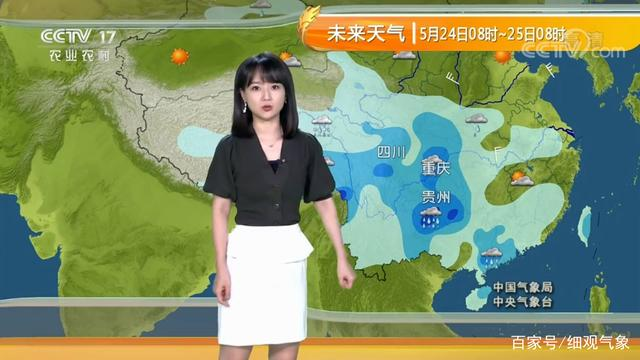

今天是1月25日星期一，农历十二月十三。会非常冷，起码要穿三件以上，阳光挺好，没什么风。明天会比今天暖和不少，晴。接下来的武威天气一周，白天今天是1月25日星期一，农历十二月十三。会非常冷，起码要穿三件以上，阳光挺好，没什么风。明天会比今天暖和不少，晴。接下来的武威天气一周，白天今天是1月25日星期一，农历十二月十三。会非常冷，起码要穿三件以上，阳光挺好，没什么风。明天会比今天暖和不少，晴。接下来的武威天气一周，白天平均气温2℃，夜晚平均气温-16℃。平均气温2℃，夜晚平均气温-16℃。平均气温2℃，夜晚平均气温-16℃。
今天是1月25日星期一，农历十二月十三。会非常冷，起码要穿三件以上，阳光挺好，没什么风。明天会比今天暖和不少，晴。接下来的武威天气一周，白天今天是1月25日星期一，农历十二月十三。会非常冷，起码要穿三件以上，阳光挺好，没什么风。明天会比今天暖和不少，晴。

穿衣指数天气寒冷，请穿防寒冬装。厚棉服，羽绒服等，内搭毛衣，保暖内衣等，帽子，手套，围巾也都可以上阵啦。
武威紫外线紫外线强度弱，外出记得涂防晒霜，避免皮肤受到太阳辐射的危害。
武威自来水（甘肃兰州新城桥检测点 测量时项目 测量值 质类别 III类标准 2018-01-02 PH 8.366-溶解氧 10.26≥512:00:00 氨氮 0.≤ 1.0高锰酸钾指数 1.9≤6断面属性黄河干流站点情况正常
今天是1月25日星期一，农历十二月十三。会非常冷，起码要穿三件以上，阳光挺好，没什么风。明天会比今天暖和不少，晴。接下来的武威天气一周，白天平均气温2℃，夜晚平均气温-16℃。
穿衣指数天气寒冷，请穿防寒冬装。厚棉服，羽绒服等，内搭毛衣，保暖内衣等，帽子，手套，围巾也都可以上阵啦。